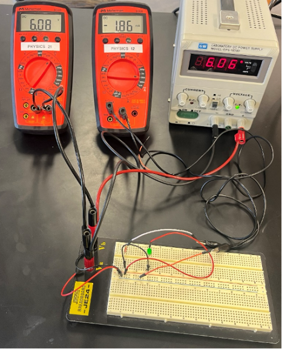
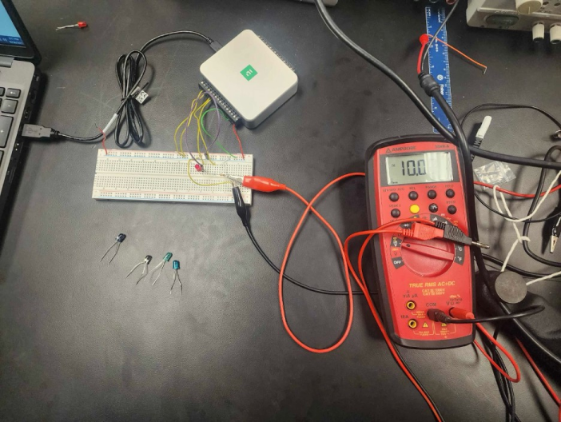
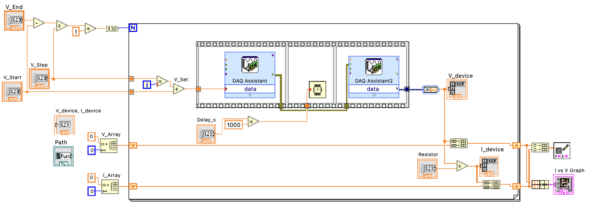
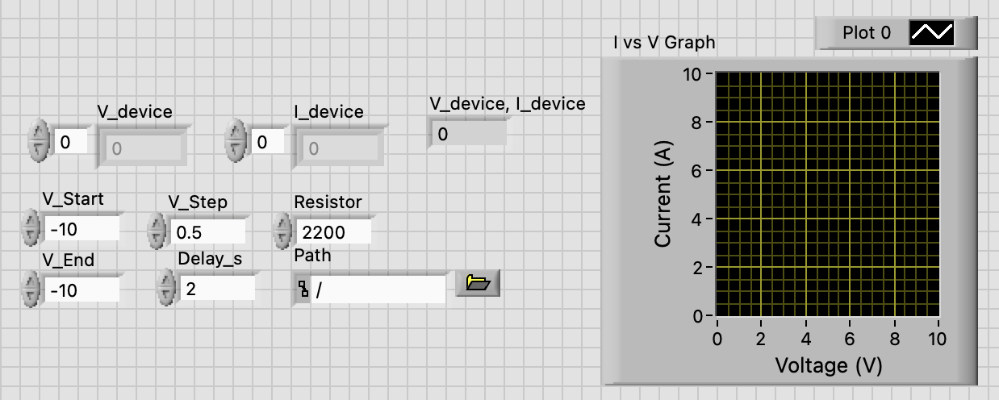
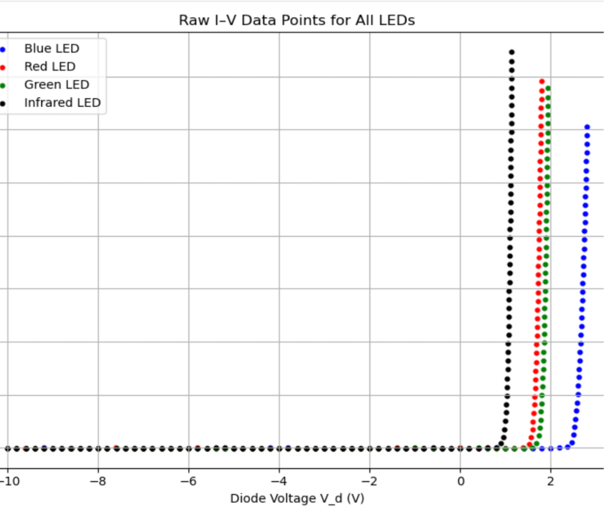
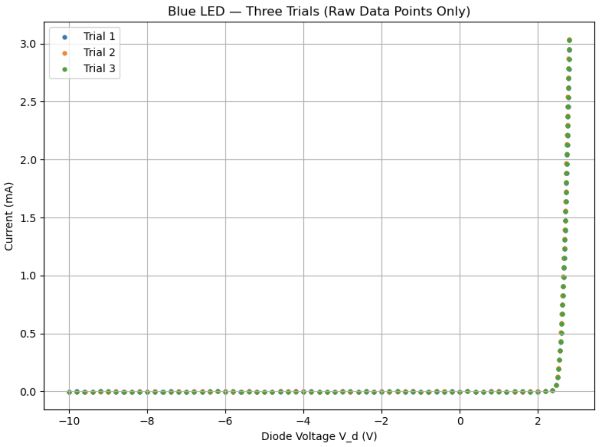
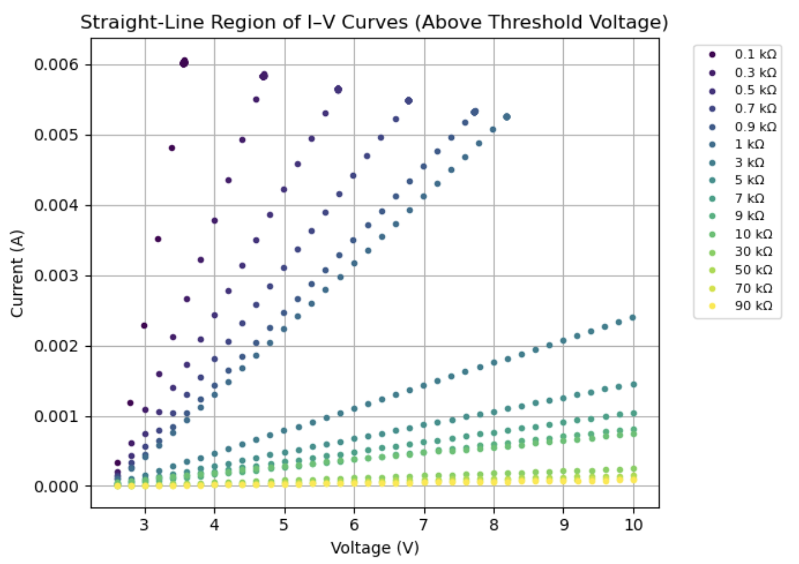
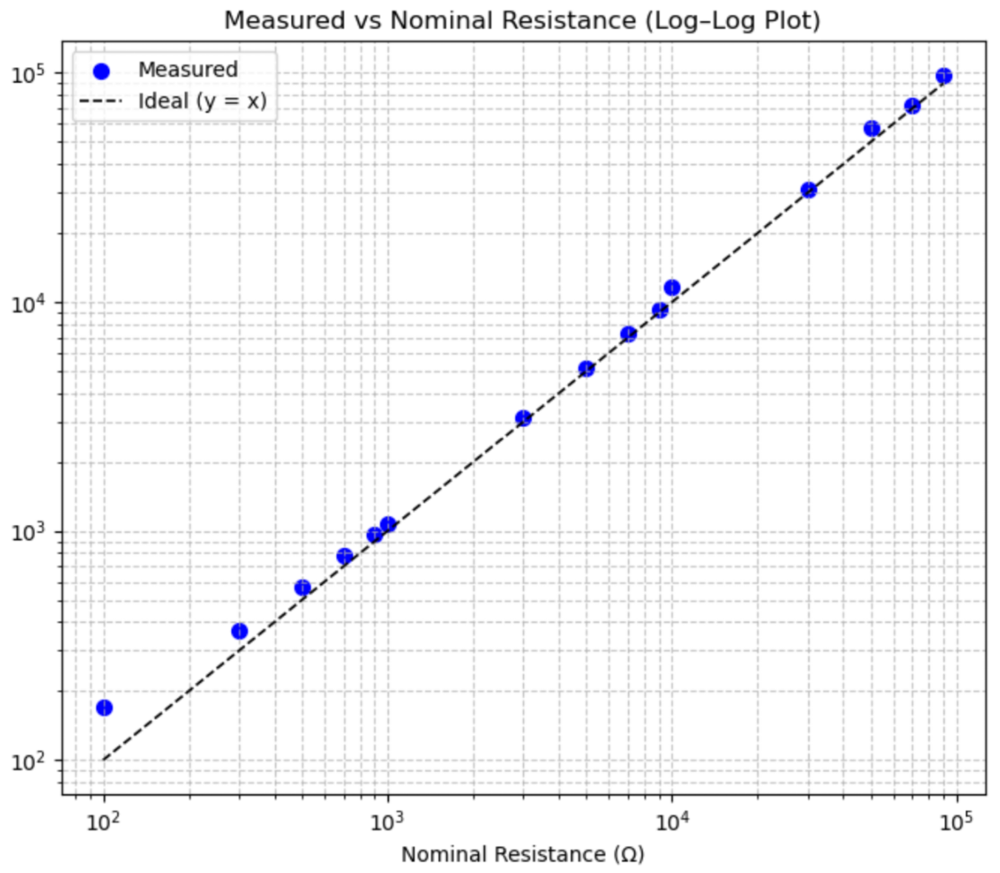

Project Gallery
The images below show the transition from manual measurements to automated data acquisition, the LabVIEW implementation, and representative experimental results.

Manual Measurement Setup
Original measurement approach using multimeters, a power supply, and breadboard circuit testing.

DAQ LED Test Setup
Automated measurement setup for LED testing using the NI USB-6003 and breadboard circuit.

DAQ Resistor Test Setup
Experimental setup used to characterize resistor behavior across multiple resistance values.

LabVIEW Block Diagram
Block-diagram implementation used to define the voltage sweep, acquire data, and build arrays.

LabVIEW Front Panel
Front-panel interface showing input controls and live current-voltage graph output.

All LED I–V Data
Raw current-voltage data comparing blue, red, green, and infrared LED behavior.

Blue LED Repeatability
Repeated blue LED trials showing consistent turn-on behavior and measurement repeatability.

Resistor I–V Behavior
Linear current-voltage behavior across multiple resistor values in the straight-line region.

Measured vs Nominal Resistance
Comparison of measured resistance values against nominal values using a log-log plot.
Select any image to view the full-resolution version.